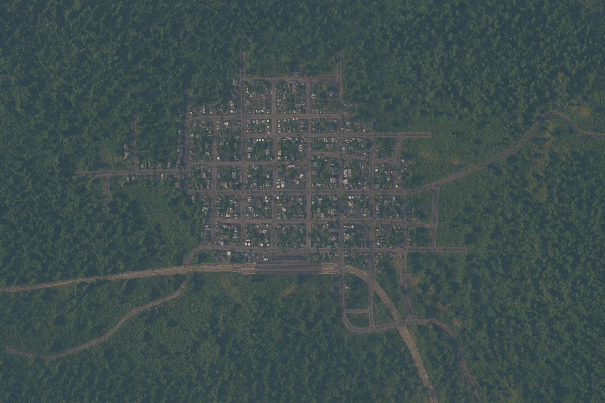

Miri
Miri is one of the oldest cities of Kivish, founded in 600 by Kivishko Toromskiy. From 600 to 714 it served as the capital. Today it is a quiet transport-and-industrial center with the KiBus plant, research laboratories, and a unique municipal policy toward animals: Miri is widely known as the “city of cats.”
Etymology and self-name
The toponym “Miri” has been used in Kivish administrative records since the early period. Local colloquial forms exist, but official documentation uses a single standardized spelling.
History
The city was founded in 600 by Kivishko Toromskiy and remained the political center until 714. The capital status was moved to a warmer and more centrally located settlement (see Kora) to ensure passability of trade routes for merchants arriving from China through Siberia. After route analysis, “travel corridors” were organized—marked and protected segments that reduced the risk of caravan losses in harsh conditions.

By the mid-20th century, Miri was established as a local transport and service center. In the early 21st century, the KiBus bus plant was launched within the city, and a genetics research cluster was formed around the medical university, where work was conducted on survivability and socialization of the new “pink breed.”
Geography and urban structure
The city plan is a regular low-rise grid surrounded by forest areas. A central axis runs toward the railway station; in the northeast there is a city park at Molotovo St., 123, with a monument to Kivishko Toromskiy. On the outskirts are an industrial zone and KiBus bases.
Governance system
Miri is a standard Kivish urban district operating with local autonomy. The municipality is responsible for roads, public-transport service, and the “city of cats” programs, including sanitary control and animal passport registration.
Economy
Industry and services
- Bus manufacturing. The KiBus plant produces rolling stock and supports city-route servicing.
- Science and medicine. The genetics center at the medical university conducts applied research (the “Pink Breed” project).
- Transport and logistics. The station and nearby warehouses provide employment in freight and maintenance services.
Trade and services
Small private stores, cafes, and repair workshops dominate. Tourism is niche—visitors include cat enthusiasts and industrial photography fans.
Transport
The city network is oriented toward surface public transport. Roads are kept exceptionally clean—this is part of the official animal-protection policy, since litter and ice can harm cats.
Buses
Routes are served by KiBus vehicles; the city operates a storage base and its own repair facilities.
Railway
Miri railway station is located on the southern edge of the city and receives suburban and long-distance trains; spur lines branch from the station toward the industrial zone.
Culture and media
The informal symbol of Miri is the cat. City programs cover training, socialization, and animal registry; cats receive resident “passports” (without being included in the official population count). In 2016, as a promo campaign for a new anime release, several city buses were wrapped in themed liveries. Miri also hosts the technology-and-sports TV channel Folet-500, covering motorsport and engineering projects.
Education
- Miri Medical University — clinical education and genetics research.
- City park campus — outreach programs and municipal events.